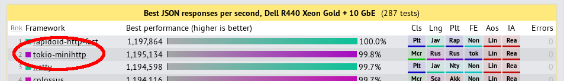
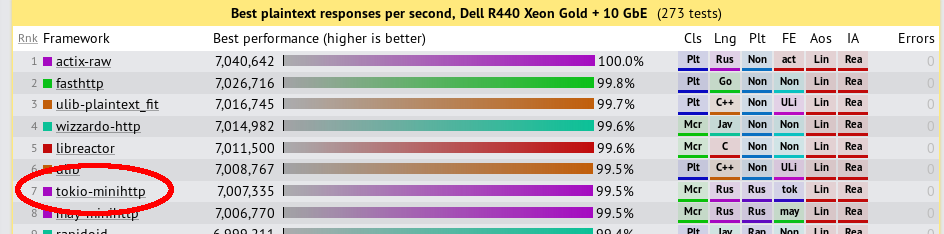

class: center, middle # Introduction to rust-libp2p ## Libp2p developers meeting - July 2018 ## Pierre Krieger <div style="position: absolute; bottom: 5%; left: 0; right: 0;"> <div style="text-align: center"> </div> </div> <div style="position: absolute; bottom: 5%; left: 5%;"> .left[ twitter.com/tomaka17 ] </div> <div style="position: absolute; bottom: 5%; right: 5%;"> .right[ github.com/tomaka ] </div> --- # The Rust programming language in a nutshell - https://rust-lang.org/ - Rust 1.0 released in 2015. - Was voted StackOverflow's most loved language in 2016, 2017 and 2018. ## Rust is fast - Achievable runtime performances equal to C/C++. - No garbage collector. - Any runtime performance cost is explicit. ## Rust is safe - Strong typing. - Contrary to C/C++, all undefined behaviour are caught by the compiler. - Around half of the Linux kernel CVEs from Jan to Apr 2018 would have been avoided in Rust. <div style="position: absolute; bottom: 39%; left: 0; right: 8%;"> <div style="text-align: right"> <img src="rust-logo.svg" alt="Rust" height="128" /> </div> </div> --- # The tokio library - Libp2p-rs uses the *futures* and *tokio* libraries. - https://tokio.rs - Tokio is a Rust library for asynchronous events processing based on cooperative multitasking. - Under the hood, works similarly to NodeJS, except multithreaded. <div style="text-align: center">   </div> <div style="position: absolute; bottom: 5%; left: 0; right: 0;"> <div style="text-align: center"> </div> </div> --- # Other fact about Rust ## Can compile to asm.js and WebAssembly. Consequences: - The piece of code that compiles for desktop can also compile for the web. - Parity and Polkadot (which will use rust-libp2p) can theoretically be compiled and run for the web<sup>(1)</sup>. https://rustwasm.github.io/book/ (1): This doesn't work yet because there are some issues with the fact that cryptographic libraries use assembly. --- # The Rust implementation of libp2p This is what this talk is about. https://github.com/libp2p/rust-libp2p - Uses tokio. - Designed to have as few overhead as possible. - Designed to give you total control over the behaviour of the server if you need to. - Compiles to asm.js and WebAssembly and can successfully run in a browser<sup>(1)</sup>. - API still a work-in-progress. As rust-libp2p gets used in practive, we discover shortcomings in the API and make tweaks. (1): Except for the cryptographic libraries issue which prevent us from using secio. --- # Introduction to using rust-libp2p ## Step 1: the `Transport` trait At the basic level, there is the `Transport` trait that can be used to reach other peers. It is implemented on objects such as: - `TcpConfig` - `WsConfig` (Ws = WebSockets) - `DnsConfig` Usage: - Build a configuration object - Use `dial()` or `listen_on()`. ```rust let mut tokio_core = tokio_core::reactor::Core::new().unwrap(); let transport = TcpConfig::new(tokio_core.handle()); let _outgoing_connec = { let addr = "/ip4/80.128.9.22/tcp/30303".parse() .expect("failed to parse multiaddr"); transport.dial(addr).expect("multiaddr not supported") }; ``` --- # Introduction to using rust-libp2p ## Step 1: the `Transport` trait Multiple transports can be combined into one. ```rust let mut tokio_core = tokio_core::reactor::Core::new().unwrap(); let tcp = TcpConfig::new(tokio_core.handle()); let ws = WsConfig::new(TcpConfig::new(tokio_core.handle())); let final_transport = tcp.or_transport(ws); ``` When dialing or listening with `final_transport`, the `tcp` transport will first be tried. If it doesn't support the multiaddress, then the `ws` transport will be tried instead. --- # Introduction to using rust-libp2p ## Step 2: the `ConnectionUpgrade` trait We can *upgrade* the `Transport` by calling `with_upgrade`. This will cause the upgrade to be negotiated on the stream. ```rust let priv_key = SecioKeyPair::ed25519_generated() .expect("failed to initialize randomness engine"); let with_secio_layer = transport.with_upgrade(SecioConfig { priv_key }); ``` `with_secio_layer` now also implements `Transport` and can be used to `dial` and `listen_on`: ```rust let _outgoing_connec = { let addr = "/ip4/80.128.9.22/tcp/30303".parse() .expect("failed to parse multiaddr"); with_secio_layer.dial(addr).expect("multiaddr not supported") }; ``` --- # Introduction to using rust-libp2p ## Step 3: combining everything By combining multiple transports and upgrades, we obtain a single "base" transport that will serve as a foundation for the rest. ```rust let mut core = Core::new().unwrap(); let base_transport = TcpConfig::new(core.handle()) .or_transport(WsConfig::new(TcpConfig::new(core.handle()))) .with_upgrade({ let key = SecioKeyPair::ed25519_generated() .expect("failed to initialize randomness engine"); SecioConfig { key } }) .with_upgrade(MultiplexConfig::new()) .into_connection_reuse(); ``` This transport uses multiplexing. If we dial the same multiaddress multiple times, or dial a multiaddress which we received a connection from before, the same connection will be reused. --- # Introduction to using rust-libp2p ## Step 4: example how to create a custom protocol We can easily create an upgrade by creating a `SimpleProtocol`. The `SimpleProtocol` object implements the `ConnectionUpgrade` trait. ```rust let echo_protocol = SimpleProtocol::new("/echo/1.0.0", |socket| { // `socket` is a stream that passes through multiplex // and secio. We produce an object that is a Stream and // Sink of packets. Ok(Framed::new(socket, BytesCodec::new())) }); ``` The `base_transport` upgraded with `proto` will negotiate the `/echo/1.0.0` protocol. --- # Introduction to using rust-libp2p ## Step 4: the async model Here is how we can use our custom protocol: ```rust let finished = base_transport .with_upgrade(echo_protocol) .dial("/ip4/80.128.9.33/tcp/5000".parse().unwrap()).unwrap() .and_then(|sink_stream| { // `sink_stream` is the object produced by our closure. sink_stream.send("hello world".into()).map(|_| ()) }); ``` The `finished` variable implements the trait `Future`. It corresponds to the point in time when we finished dialing the node, negotiated secio, mutiplex and `/echo/1.0.0`, and sent `"hello world"`. Due to the way `tokio` works, we have to run the future to completion like this: ```rust let _ = core.run(finished); ``` --- # Introduction to using rust-libp2p ## Step 5: creating a swarm Instead of calling `dial()` and `listen_on()` manually, we should use a `swarm` instead. ```rust let (swarm_controller, swarm_future) = libp2p::core::swarm( base_transport.with_upgrade(echo_protocol), move |socket, remote_addr| { // Called whenever we successfully negotiate // `/echo/1.0.0` with a peer. sink_stream.send("hello world".into()) .map(|_| ()) }, ); // We can control the swarm with the `swarm_controller`. let listen_addr = "/ip4/0.0.0.0/tcp/0".parse().unwrap(); swarm_controller.listen_on(listen_addr).unwrap(); // The future has to be run for it to work. core.run(swarm_future).unwrap(); ``` --- # Introduction to using rust-libp2p ## Step 5: creating a swarm The closure passed to the `swarm` function is the single point of entry whenever we successfully negotiate a protocol with a remote peer. - This makes it easier to debug any possible issues. - You only need to pass around the `swarm_controller` in your code. --- # Introduction to using rust-libp2p ## Step 6: setting up Kademlia This is how you combine multiple protocols. ```rust enum FinalUpgrade<Echo, Kad> { Echo(Echo), Kad(Kad), } let echo = upgrade::map(echo, FinalUpgrade::Echo); let listening_upgrade = upgrade::or( echo.clone(), upgrade::map(kad::KadConnecConfig::new(), FinalUpgrade::Kad) ); let (swarm_controller, swarm_future) = libp2p::core::swarm( listening_upgrade, move |final_upgrade, remote_addr| { ... } ); // We need to pass the transport with upgrade again if we dial swarm_controller.dial( "/ip4/1.2.3.4/tcp/10000".parse().unwrap(), base_transport.with_upgrade(echo) ).unwrap(); ``` --- # Introduction to using rust-libp2p ## Step 6: setting up Kademlia (continued) Here is the swarm closure. ```rust // (continued) let (swarm_controller, swarm_future) = libp2p::core::swarm( listening_upgrade, move |final_upgrade, remote_addr| { match final_upgrade { FinalUpgrade::Echo(echo) => { sink_stream.send("hello world".into()) .map(|_| ()) }, FinalUpgrade::Kad((ctrl, stream)) => { handle_kademlia(ctrl, stream) }, } } ); ``` --- # Introduction to using rust-libp2p ## Step 6: setting up Kademlia (continued) Answering Kademlia requests is done in a semi-automatic way (a boiler-plate code must be written manually), so that we have total control over our server. ```rust fn handle_kademlia(controller: KadController, requests: impl Stream<Item = KadIncomingRequest>) -> impl Future<Item = ()> { requests.for_each(move |req| { match req { KadIncomingRequest::FindNode { id, resp } => resp.respond(build_kad_response(&id)), KadIncomingRequest::PingPong => {}, } Ok(()) }) } ``` (`build_kad_response` not shown) --- # Introduction to using rust-libp2p ## Step 6: setting up Kademlia The code is very explicit, but this is on purpose. Examples of advantages of having a boiler-plate code for Kademlia and having total control: - We can refuse peers if they have been malicious. - We can filter the results in the peer store. - We can maintain multiple DHTs if we want to. --- # Introduction to using rust-libp2p ## Step 7: performing Kademlia queries Setting up the Kademlia system and the peer store. Done at initialization. ```rust let kad_system = KadSystem::without_init(KadSystemConfig { parallelism: 3, local_peer_id: local_peer_id, kbuckets_timeout: Duration::from_secs(10), request_timeout: Duration::from_secs(10), known_initial_peers: bootstrap_nodes, }); ``` The `KadSystem` most notably contains the DHT. ```rust let peerstore = MemoryPeerstore::empty(); ``` The peerstore contains the list of all known peers, even ones we're not connected to. --- # Introduction to using rust-libp2p ## Step 7: performing Kademlia queries Making queries for random walk peer discover. ```rust Interval::new(Instant::now(), Duration::from_secs(30)) .and_then(move |_| { kad_system .find_node(build_random_peer_id(), move |peer_id| { obtain_kad_connection(peer_id, ...) }) .filter_map(move |event| { match event { KadQueryEvent::NewKnownMultiaddrs(peers) => { // Learned addresses of peers // ... add them to the peerstore ... None }, KadQueryEvent::Finished(out) => Some(out), } }) }) .for_each(move |result| { // Discovered peers are in `result` }); ``` --- # Introduction to using rust-libp2p ## Other protocols The other protocols (custom protocols, floodsub, etc.) work with the same principle: - The user manually decides which peers we connect to. The output of the random walk discovery can be used to dial all the nodes. - All the negotiated protocols call the closure passed to `swarm`. - This should yield some sort of controller for the newly-opened protocol, and a `Future` or a `Stream` that represents the events that happen during the handling of the protocol. --- class: center, middle # Disclaimer This may look complicated to use, but we will try to continue improving the API to provide shortcuts. --- class: center, middle # Thank you! <div style="position: absolute; bottom: 5%; left: 0; right: 0;"> <div style="text-align: center"> </div> </div> <div style="position: absolute; bottom: 5%; left: 5%;"> .left[ twitter.com/tomaka17 ] </div> <div style="position: absolute; bottom: 5%; right: 5%;"> .right[ github.com/tomaka ] </div>